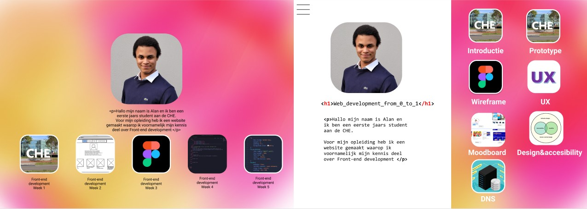
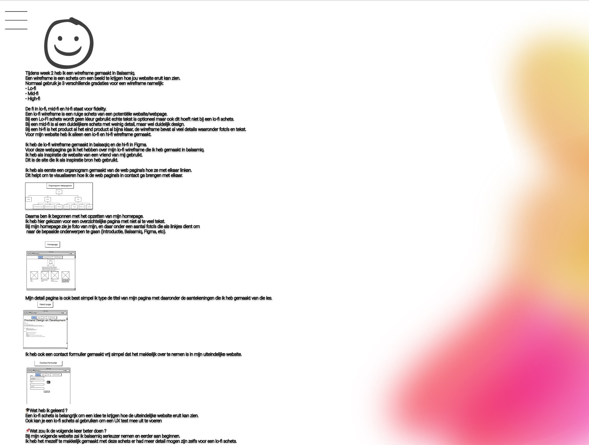

Wat is Figma en waar wordt dit programma voor gebruikt? Zoals ik al had verteld bij mijn Balsamiq pagina heb ik 2 verschillende wireframe's gemaakt, namelijk lo-fi en hi-fi. Als je de Balsamiq pagina nog niet hebt gelezen klik dan hier om het nog even door te lezen. Ik heb mijn lo-fi wireframe in balsamiq gemaakt, en mijn hi-fi in Figma.
Het doel van een hi-fi wireframe is om gedetailleerde pagina’s te ontwerpen die je later kan omzetten in code. Ik ben begonnen met een hi-fi wireframe homepage te designen. De achtergrond van mijn homepage en tevens ook alle andere pagina’s heb ik zelf ontworpen met Adobe Xd. Toen ik mijn homepage af had heb ik deze aan een vriend van mij laten zien die ervaring heeft met web development. Hij gaf mij feedback en stelde een aantal aanpassingen voor. Ik heb de aanpassingen toegepast voor een nog mooier resultaat De linker foto is mijn eerste versie en de rechter foto is het uiteindelijke design geworden waarbij aanpassingen zijn verricht.
Ik heb ook een aantal wireframe detail pagina’s gemaakt om een beeld te krijgen hoe alle informatie moet staan, en wat ik ga vertellen per onderwerp. Hier heb ik een een voorbeeld van mijn balsamiq hi-fi wireframe
Ik heb hier alle gemaakte hi-fi wireframes bij elkaar
Ik heb geleerd dat je met een hi-fi wireframe eigenlijk al bijna klaar bent met de website. Een hi-fi wireframe is in pricipe al bijna het uiteindelijke product dat je wilt gaan leveren het enige wat je dan nog hoeft te doen is het overzetten in code. Het omzetten naar code gaat een stuk makkelijker omdat ik nu een beeld heb hoe ik mijn pagina's wil hebben.
De volgende keer zal ik meteen van al mijn webpagina’s een hi-fi wireframe maken. Ik heb tijdens het bouwen van mijn website voor elke pagina nu een aparte wireframe gemaakt om zo te visualiseren hoe ik het wil hebben. Het beste zou zijn om dit te doen voordat ik begin met het maken van de site. Ik dacht dat het genoeg zou zijn om een homepage en 1 gedetailleerde pagina te maken in Figma. Uiteindelijk bleek het juist heel onhandig te zijn omdat ik geen beeld kon vormen hoe ik mijn pagina’s zou willen hebben.